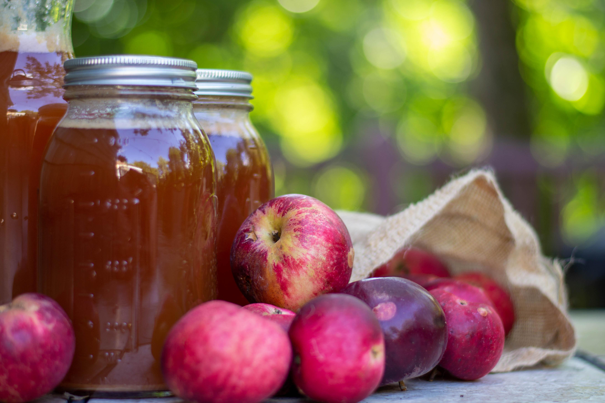
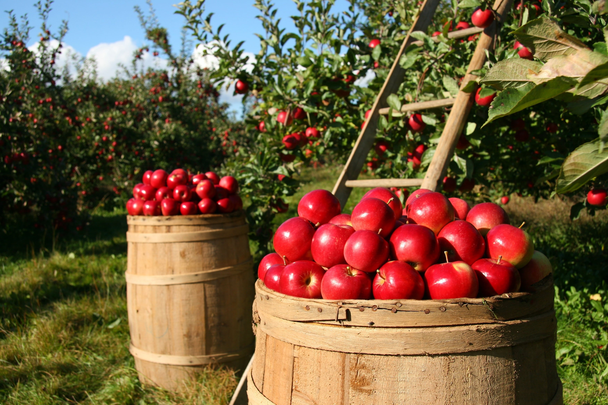
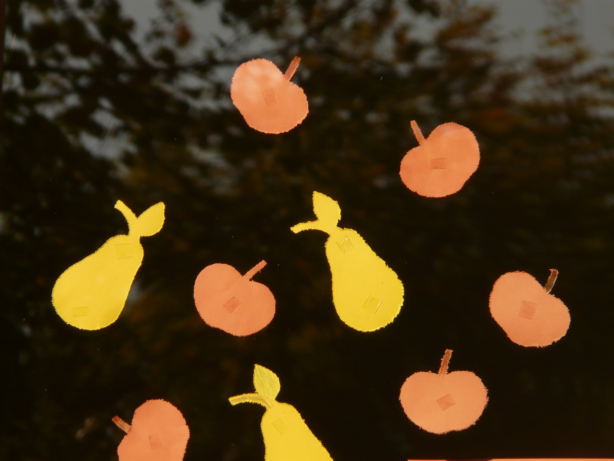

Event Schedule
Gates & Grounds
Gates open at 10:00 AM daily. Strolls run 11:00 AM until close.
Live Music — Main Stage
- 12:00 PM — The Apple Pickers
- 3:00 PM — Orchard Jazz Band
- 7:30 PM — Headliner Concert
Cider Tasting Pavilion
Open 10:00 AM – 8:00 PM. Tastings are available for all ages.

Apple Orchard Tours
Tours run every hour from 11:00 AM – 7:00 PM. Learn about apple cultivation and history.

Crafts & Games
Enjoy apple-themed crafts and games for all ages, open 11:00 AM until close.
